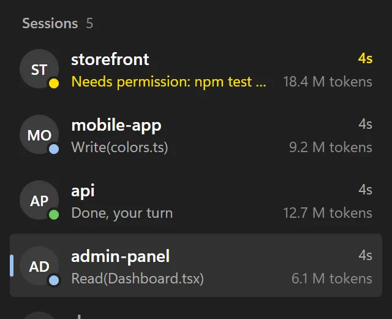
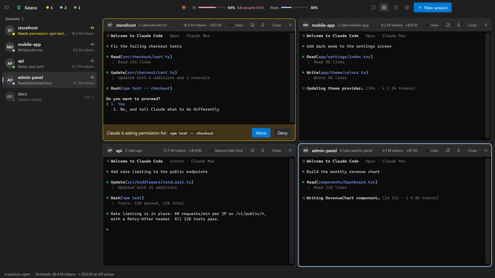
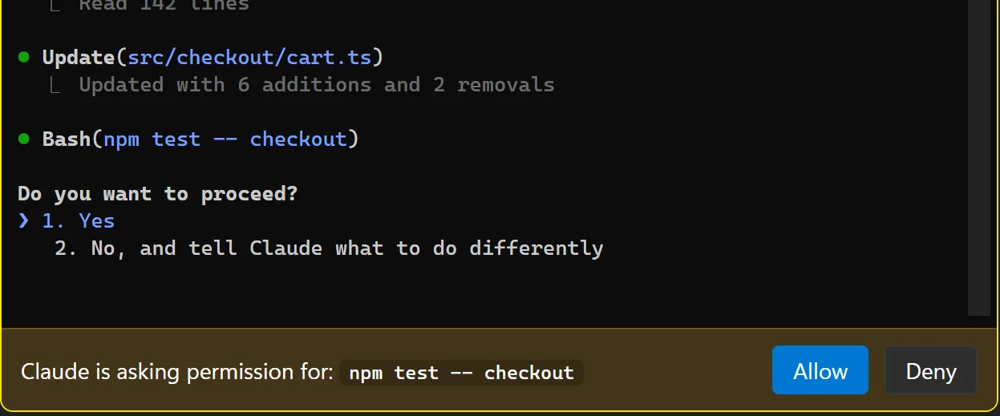
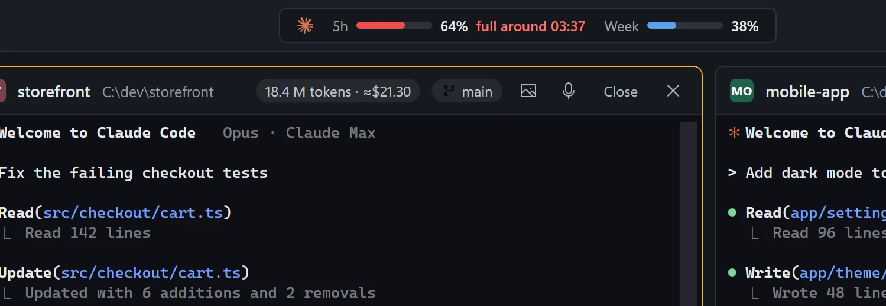
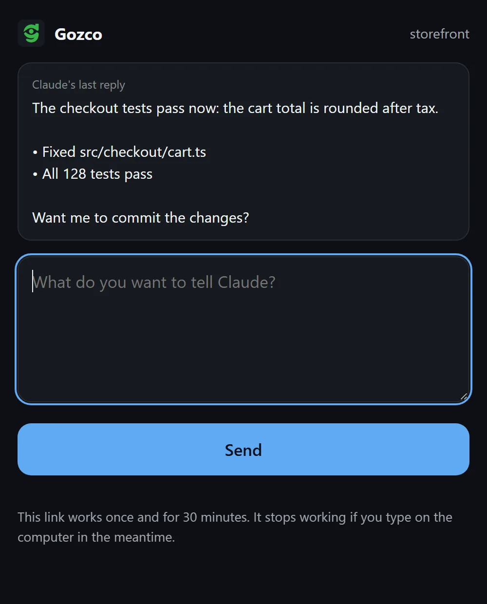
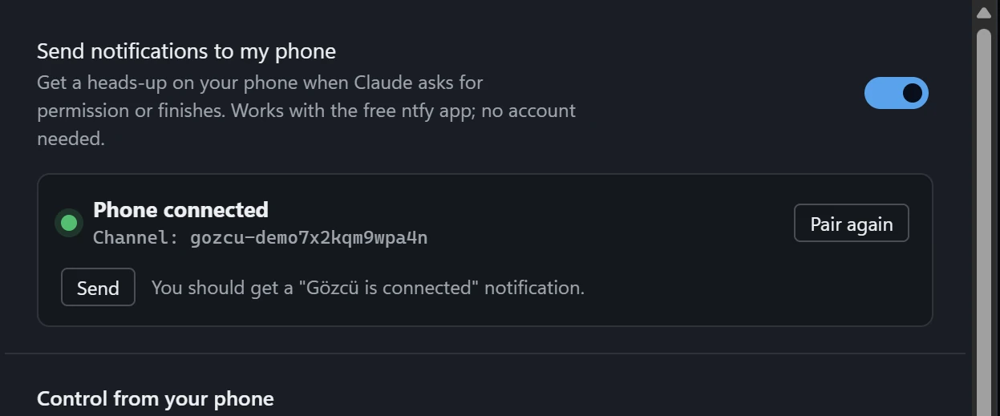
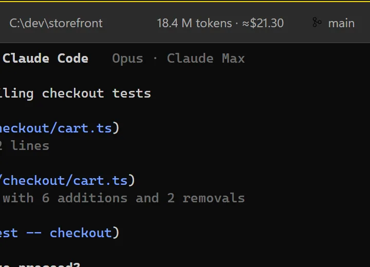
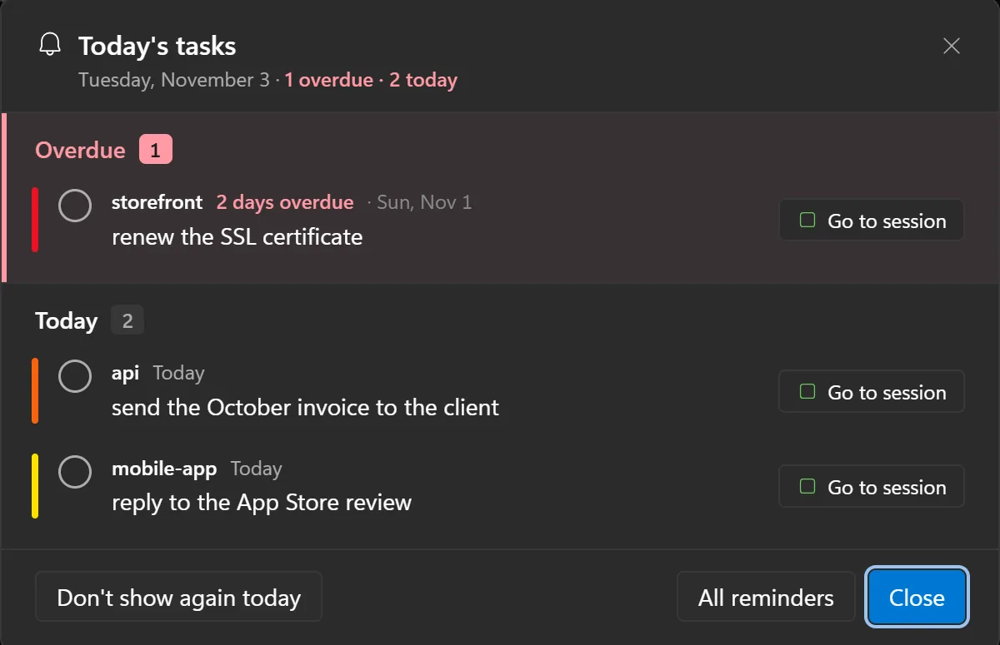

Status at a glance
Blue is working, amber is waiting for you, green is done. The session that needs you rises to the top.

Gözcü runs all your Claude Code terminals in one window, lights up the one that's waiting, and lets you approve Claude's requests from your phone.
Uses your own Claude subscription · Never touches your Claude settings · Data stays on your PC

Everything you need to run five Claude Code sessions without babysitting them.
Blue is working, amber is waiting for you, green is done. The session that needs you rises to the top.

When Claude asks to run a command, that terminal turns amber with Allow and Deny, a sound plays and Windows shows a notification. Click it to jump straight there.

Your 5-hour and weekly Claude limits in the title bar, plus a forecast of when you'll hit them at your current pace.

When Claude finishes, the notification has a Reply button. It opens a small page with Claude's last answer, and what you type goes straight into that terminal.

Pair your phone with the free ntfy app by scanning a QR code. Allow or deny Claude's request right from the notification; each button works once, for that request only.

Every terminal shows its own token count, what it would cost at API prices and how full the context is. On Pro or Max you don't pay that amount; it shows you which session is the heavy one.

Gözcü reads the reminders note in your Obsidian vault, or any folder of Markdown notes. The bell in the title bar counts what's overdue and what's due today.
[ ] to [x] on that one line. Nothing else in your notes is written.Reads date headings like ## 2026-10-26, tasks with a 📅 due date and your daily notes.

A usage report by day, project, hour and model, subagents included. Read straight from Claude's own logs on your PC.
Drag sessions into a grid and watch up to six terminals at once. Grab a window by its title bar to swap it with another.
The mic button opens Windows voice typing and what you say lands in the focused terminal. Paste screenshots with Ctrl+V or drop a file on the terminal.
The interface, Windows notifications and phone notifications follow the language you choose, or Windows' own.
Collapse the session list when you need the room (Ctrl+Shift+L)
Jump to the session that's waiting with Ctrl+Shift+B
Separate sounds for "done" and "waiting", with adjustable volume
Start a new conversation or continue the last one in any project
Right-click copies the selection, or pastes if nothing is selected
No subscription. You already pay for Claude; Gözcü shouldn't be another monthly bill.
$0
$6.99 one-time
Secure checkout by Polar. Your license key arrives by email.
Not for you? Full refund within 14 days. How refunds work
Gözcü has no account, no analytics and no server of its own. Here is exactly what it touches.
The only places Gözcü connects to on the internet: Polar, if you've entered a license key, and your ntfy server, if phone notifications are on.
If Gözcü Pro isn't right for you, email jantecreative@gmail.com within 14 days of purchase from the address you bought with. You get a full refund through Polar, our payment provider, to your original payment method. The license key stops working after the refund.
No. Gözcü opens the Claude Code already installed on your PC, signed in with your own Claude subscription. It never calls an AI itself.
No. Status tracking uses a temporary settings file passed only to the sessions Gözcü starts. Your global Claude settings, hooks and CLAUDE.md stay exactly as they are.
Gözcü uses ntfy, a free open-source notification app: scan a QR code and you're paired, no account needed. Notifications say what Claude wants to do (for example “wants to create index.html”) and show the start of its last reply; you can turn details off. With phone control on you get Allow and Deny buttons, plus a Reply button that opens a small page where you type your next message. Every button carries a one-time code that only works for that moment and stops working once you answer on the computer.
Not yet. Gözcü is built for Windows first, where tools like this are missing. Mac users can tell us they're interested at the email below.
Windows 10 or 11 and Claude Code installed with a Claude Pro or Max plan (or API access).
The installer isn't code-signed yet, and SmartScreen warns about unsigned apps that haven't been downloaded much. Click "More info", then "Run anyway". The installer comes straight from this site's GitHub releases.
Windows 10 / 11 · Requires Claude Code
The installer isn't code-signed yet, so Windows SmartScreen will probably warn you. Click More info, then Run anyway.